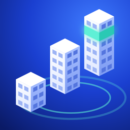

BMS Pocket：ポケットに入るビル自動制御ツール
1回スキャンするだけで、ネットワーク上のコントローラーをすべて表示します。BMS Pocketは、BACnet、Modbus、OPC UA、Niagara（oBIX）のデバイスを1回のスキャンで見つけ、デバイスごとにプロトコルを表示します。そのままポイントを確認し、ライブ値を読み取り、iPhoneから指令を送れます。ノートPC、アカウント、クラウドは不要です。
BMS技術者、試運転エンジニア、システムインテグレーター、設備管理チーム向けです。
BMS Pocketを選ぶ理由
- 1回のスキャンで4つのプロトコル：プロトコルを選んで1回スキャンすると、1つのデバイスリストになります
- 各デバイスのプロトコルとアドレスを表示します。デバイスが報告する場合は、ベンダーとモデルも表示します
- デバイスとポイントを確認し、検索し、ウォッチリストに追加できます
- 読み取り、書き込み、オーバーライド、解除ができます。BACnetの優先度配列と読み戻しに対応します
- 保存したModbusデバイスタイプとNiagara（oBIX）ステーションはiPhoneに残ります
1つのアプリで4つのプロトコル
- BACnet/IP：スキャン、ルーターの先にあるデバイス、BBMD、優先度配列付きのポイント。
- Modbus TCP：レジスタを手動で読み取るか、編集して保存できるデバイスタイプを使えます。
- OPC UA：暗号化なしの匿名接続を受け付けるサーバーの変数の読み取りと書き込み。
- Niagara（oBIX経由）：oBIXサービスのあるステーションにサインインし、ポイントを読み取り、指令を送れます。
最初のスキャンから報告書まで
- 検出：ネットワーク上のコントローラーを見つけます。IPアドレスでも追加できます。
- 監視：現在の値、ウォッチリスト、BACnetの週間スケジュール。
- 指令：確認して優先度を選ぶと、アプリが値を読み返します。アプリが保持している指令は1つの一覧にあり、いつでも解除できます。
- 診断：アラーム、オーバーライド、応答しないデバイスを1つの画面に表示します。
- 試運転：ポイントごとの動作確認とPDF報告書。EDE、OPC UAタグ一覧、CSVの出力。
プラン
Basicは無料です。4つのプロトコルすべてのスキャンと、BACnetポイントとModbusレジスタの読み取りができます（1日100デバイスまで）。Proでは、OPC UA、Modbusデバイスタイプ、指令、スケジュールの編集、ファイル出力も使えます。Engineerでは、さらにNiagara（oBIX経由）、指令履歴、試運転報告書（PDF）も使えます。
データはiPhoneの中に残ります
アプリはローカルネットワークで動作します。アカウントなし、クラウドなし、利用状況の分析なし。データは収集しません。プライバシーポリシーをご覧ください。
よくある質問
BMS Pocketはどのデバイスを見つけますか？
BACnet/IP、Modbus TCP、OPC UA、Niagara（oBIX）を選んで1回スキャンします。見つかったデバイスごとに、プロトコルとアドレスを表示します。デバイスが報告する場合は、ベンダーとモデルも表示します。
ノートPCやゲートウェイは必要ですか？
不要です。iPhoneをコントローラーと同じネットワークにWi-Fiなどで接続し、スキャンしてください。
値の書き込みやオーバーライドの解除はできますか？
はい、ProまたはEngineerでできます。各デバイスへの最初の指令の前に確認を求めます。BACnetでは優先度を選べ、アプリが値を読み返します。アプリが保持している指令は1つの一覧にまとまっています。指令の解除はどのプランでも無料です。
アプリはデータを収集しますか？
いいえ。アカウント、クラウド、利用状況の分析はありません。アプリが保存した内容はiPhoneの中に残ります。
料金と対応するiPhoneは？
Basicは無料です。ProとEngineerはサブスクリプションで、料金はApp Storeに表示されます。iOS 15以降が必要です。
BMS Pocketは、訓練を受けた人が、操作する権限のある設備で使うためのアプリです。安全システムではありません。製品名とプロトコル名は各権利者のものです。利用規約をご覧ください。